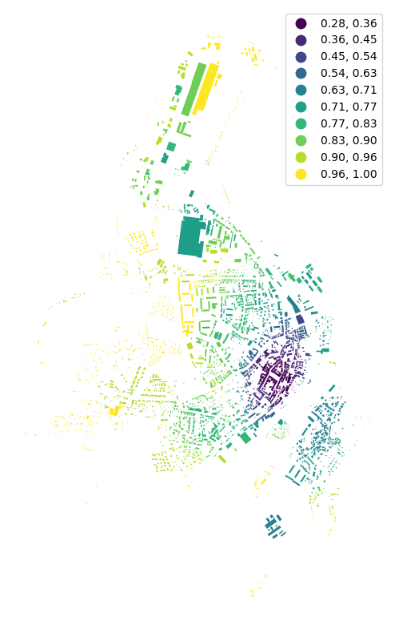
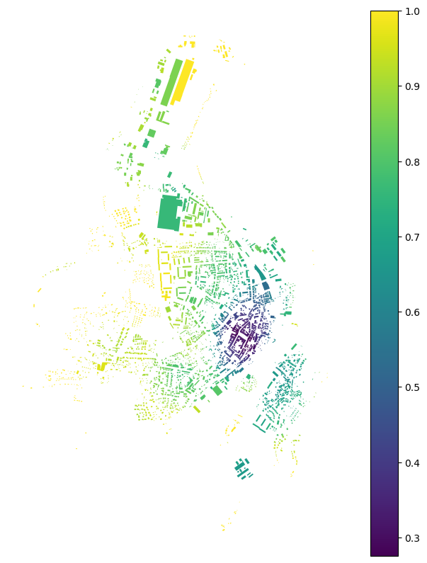
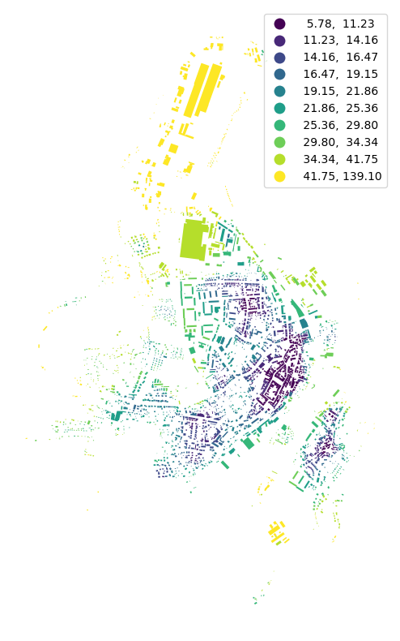

Note
Using two spatial weights matrices#
Some functions are using spatial weights for two different purposes. Therefore two matrices have to be passed. We will illustrate this case measuring building adjacency and mean interbuilding distance.
[2]:
import momepy
import geopandas as gpd
import matplotlib.pyplot as plt
/Users/martin/Git/momepy/momepy/coins.py:15: UserWarning: Shapely 2.0 is installed, but because PyGEOS is also installed, GeoPandas will still use PyGEOS by default for now. To force to use and test Shapely 2.0, you have to set the environment variable USE_PYGEOS=0. You can do this before starting the Python process, or in your code before importing geopandas:
import os
os.environ['USE_PYGEOS'] = '0'
import geopandas
In a future release, GeoPandas will switch to using Shapely by default. If you are using PyGEOS directly (calling PyGEOS functions on geometries from GeoPandas), this will then stop working and you are encouraged to migrate from PyGEOS to Shapely 2.0 (https://shapely.readthedocs.io/en/latest/migration_pygeos.html).
import geopandas as gpd
/Users/martin/mambaforge/envs/momepy_dev/lib/python3.11/site-packages/tqdm/auto.py:22: TqdmWarning: IProgress not found. Please update jupyter and ipywidgets. See https://ipywidgets.readthedocs.io/en/stable/user_install.html
from .autonotebook import tqdm as notebook_tqdm
We will again use osmnx to get the data for our example and after preprocessing of building layer will generate tessellation.
[3]:
import osmnx as ox
gdf = ox.geometries.geometries_from_place('Kahla, Germany', tags={'building':True})
buildings = ox.projection.project_gdf(gdf)
buildings['uID'] = momepy.unique_id(buildings)
limit = momepy.buffered_limit(buildings)
tessellation = momepy.Tessellation(buildings, unique_id='uID', limit=limit,
verbose=False).tessellation
/Users/martin/mambaforge/envs/momepy_dev/lib/python3.11/site-packages/shapely/predicates.py:798: RuntimeWarning: invalid value encountered in intersects
return lib.intersects(a, b, **kwargs)
/Users/martin/mambaforge/envs/momepy_dev/lib/python3.11/site-packages/shapely/set_operations.py:340: RuntimeWarning: invalid value encountered in union
return lib.union(a, b, **kwargs)
/Users/martin/mambaforge/envs/momepy_dev/lib/python3.11/site-packages/pygeos/predicates.py:764: RuntimeWarning: invalid value encountered in intersects
return lib.intersects(a, b, **kwargs)
/Users/martin/mambaforge/envs/momepy_dev/lib/python3.11/site-packages/pygeos/predicates.py:764: RuntimeWarning: invalid value encountered in intersects
return lib.intersects(a, b, **kwargs)
/Users/martin/mambaforge/envs/momepy_dev/lib/python3.11/site-packages/pygeos/predicates.py:764: RuntimeWarning: invalid value encountered in intersects
return lib.intersects(a, b, **kwargs)
/Users/martin/mambaforge/envs/momepy_dev/lib/python3.11/site-packages/pygeos/predicates.py:764: RuntimeWarning: invalid value encountered in intersects
return lib.intersects(a, b, **kwargs)
/Users/martin/mambaforge/envs/momepy_dev/lib/python3.11/site-packages/pygeos/predicates.py:764: RuntimeWarning: invalid value encountered in intersects
return lib.intersects(a, b, **kwargs)
/Users/martin/mambaforge/envs/momepy_dev/lib/python3.11/site-packages/pygeos/constructive.py:175: RuntimeWarning: invalid value encountered in buffer
return lib.buffer(
/Users/martin/mambaforge/envs/momepy_dev/lib/python3.11/site-packages/pygeos/set_operations.py:388: RuntimeWarning: invalid value encountered in unary_union
result = lib.unary_union(collections, **kwargs)
/Users/martin/mambaforge/envs/momepy_dev/lib/python3.11/site-packages/pygeos/constructive.py:175: RuntimeWarning: invalid value encountered in buffer
return lib.buffer(
/Users/martin/Git/momepy/momepy/elements.py:277: DeprecationWarning: In a future version, `df.iloc[:, i] = newvals` will attempt to set the values inplace instead of always setting a new array. To retain the old behavior, use either `df[df.columns[i]] = newvals` or, if columns are non-unique, `df.isetitem(i, newvals)`
objects.loc[mask, objects.geometry.name] = objects[mask].buffer(
/Users/martin/mambaforge/envs/momepy_dev/lib/python3.11/site-packages/pygeos/set_operations.py:129: RuntimeWarning: invalid value encountered in intersection
return lib.intersection(a, b, **kwargs)
/Users/martin/mambaforge/envs/momepy_dev/lib/python3.11/site-packages/geopandas/tools/clip.py:67: DeprecationWarning: In a future version, `df.iloc[:, i] = newvals` will attempt to set the values inplace instead of always setting a new array. To retain the old behavior, use either `df[df.columns[i]] = newvals` or, if columns are non-unique, `df.isetitem(i, newvals)`
clipped.loc[
Building adjacency#
Building adjacency is using spatial_weights_higher to denote the area within which the calculation occurs (required) and spatial_weights to denote adjacency of buildings (optional, the function can do it for us). We can use distance band of 200 meters to define spatial_weights_higher.
[4]:
import libpysal
dist200 = libpysal.weights.DistanceBand.from_dataframe(buildings, 200,
ids='uID')
/Users/martin/mambaforge/envs/momepy_dev/lib/python3.11/site-packages/libpysal/weights/weights.py:172: UserWarning: The weights matrix is not fully connected:
There are 7 disconnected components.
There are 3 islands with ids: 329, 577, 2491.
warnings.warn(message)
[4]:
adjac = momepy.BuildingAdjacency(
buildings, spatial_weights_higher=dist200, unique_id='uID')
buildings['adjacency'] = adjac.series
Calculating spatial weights...
Spatial weights ready...
Calculating adjacency: 100%|██████████| 3014/3014 [00:00<00:00, 127981.54it/s]
[5]:
f, ax = plt.subplots(figsize=(10, 10))
buildings.plot(ax=ax, column='adjacency', legend=True, cmap='viridis', scheme='naturalbreaks', k=10)
ax.set_axis_off()
plt.show()

If we want to specify or reuse spatial_weights, we can generate them as Queen contiguity weights. Using libpysal or momepy (momepy will use the same libpysal method, but you don’t need to import libpysal directly):
[5]:
queen = libpysal.weights.Queen.from_dataframe(buildings,
silence_warnings=True,
ids='uID')
queen = momepy.sw_high(k=1, gdf=buildings, ids='uID', contiguity='queen')
[7]:
buildings['adj2'] = momepy.BuildingAdjacency(buildings,
spatial_weights_higher=dist200,
unique_id='uID',
spatial_weights=queen).series
Calculating adjacency: 100%|██████████| 3014/3014 [00:00<00:00, 132310.77it/s]
[8]:
f, ax = plt.subplots(figsize=(10, 10))
buildings.plot(ax=ax, column='adj2', legend=True, cmap='viridis')
ax.set_axis_off()
plt.show()

Mean interbuilding distance#
Mean interbuilding distance is similar to neighbour_distance, but it is calculated within vicinity defined by the order of contiguity.
[6]:
queen = libpysal.weights.Queen.from_dataframe(tessellation,
silence_warnings=True,
ids='uID')
interblg_distance = momepy.MeanInterbuildingDistance(
buildings, queen, 'uID')
buildings['mean_ib_dist'] = interblg_distance.series
Computing mean interbuilding distances...
100%|██████████| 3014/3014 [00:01<00:00, 2257.00it/s]
[7]:
f, ax = plt.subplots(figsize=(10, 10))
buildings.plot(ax=ax, column='mean_ib_dist', scheme='quantiles', k=10, legend=True, cmap='viridis')
ax.set_axis_off()
plt.show()

[ ]: